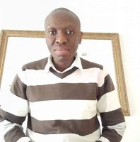

About Me
My name is Obakeng, and most people who know me call me Obakeng while some call me by my middle name Kennedy. I was born in South Africa in a small town known as Mahikeng. I am currently enrolled for a online degree in Software Development with BYU-Idaho. I am currently single and looking to get married and start a family. I enjoy learning new things about how the technology that we use each day works.
Mahikeng, South Africa

Mahikeng is situated in the North West Province of South Africa and is a border town located near South Africa's border with Botswana to the North. The town is also the seat of the North West Provincial Government and the North West Division of the High Court of South Africa. Mahikeng is also home to one of the 3 campuses of the North West University, which is one of the leading universities in South Africa.